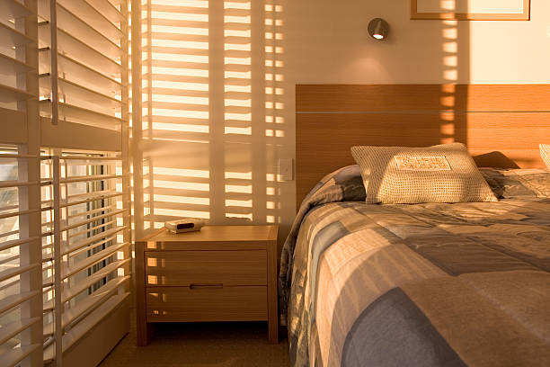

USA - Nationwide
info@deliwindowsblinds.xyz
USA - Nationwide
info@deliwindowsblinds.xyz

Keep your window blinds looking new with our professional cleaning services . Enjoy a dust-free environment while extending the life of your blinds.
Bring back the shine with our window blind cleaning services! We help maintain the beauty and function of your blinds, ensuring they look and perform their best.
Residential & commercial Windows Blinds
Quality services at affordable prices
Immediate 24/ 7 emergency services


Finding the perfect window blinds for your home or office can be daunting, especially when you're looking for window blinds near me in Usa - Nationwide. However, our company stands out as a reliable provider of a vast selection of high-quality blinds tailored to meet your specific needs. With years of experience in the industry, we understand the importance of aesthetics, functionality, and price point. Our extensive inventory covers everything from classic wood blinds to modern motorized options, ensuring that you can find exactly what you need to elevate your space. Plus, the local nature of our service means you get prompt assistance and support, reinforcing our commitment to the Usa - Nationwide community.
When it comes to window treatments, one size does not fit all. Custom window blinds installation provides the flexibility and personalization to match your unique style and home decor. We understand that every window is different and that your vision should be brought to life with high-quality materials. Our experienced team offers a comprehensive range of custom options from shape and size to color and texture.
From the moment you contact us, we will guide you through the entire process, starting with a consultation to understand your specific needs. We take precise measurements to ensure that your blinds fit just right. Our professional installation team ensures everything is secured, functional, and beautiful. Quality matters, which is why we source only the best products and provide exceptional service.

Finding the right window blinds at a reasonable price can often feel like a daunting task, especially when you don’t want to compromise on quality. At our company, we take pride in offering a vast selection of affordable window blinds that do not skimp on style or durability. Our mission is to provide residents of Usa - Nationwide with high-quality window treatments that fit within their budgets.
Our team understands that home renovations can quickly add up, which is why we've curated a comprehensive line of budget-friendly window blinds. Our affordable options come in various styles, including roller blinds, vertical blinds, and faux wood blinds, making it easy to find the perfect look for any room in your home.
Each product is crafted with care to ensure that you receive exceptional value without sacrificing aesthetics or functionality. We believe that everyone deserves the chance to enhance their living space without overspending. Our competitive pricing model is designed to ensure you are getting the best possible deal on the market.
Moreover, our extensive experience in the window treatment industry means we know how to keep costs low while still delivering high-quality products. By working closely with our suppliers, we negotiate the best prices, and we pass those savings onto you. Our goal is to create a stress-free shopping experience where you feel confident about your purchase.
Installation is often a concern for budget-conscious consumers, but we offer affordable professional installation services that are designed to fit your budget. Our knowledgeable team ensures that your window blinds are installed correctly, guaranteeing both functionality and style.
In addition to our affordable products, we are dedicated to providing excellent customer service. We believe in transparency, and we guide you through every step of the process—from selection to installation. Our team is always available to address any questions or concerns, ensuring that you feel assured in your investment.
Finally, when you choose our affordable window blinds in Usa - Nationwide, you also invest in energy efficiency. Many of our options are designed to improve your home’s insulation and reduce energy costs, providing even greater value for your investment. Enjoy the perfect balance of style, affordability, and functionality, all while transforming your living spaces with our window blinds.

Finding the best window blinds companies in Usa - Nationwide can be a daunting task. However, our extensive experience and dedication to customer service make us stand out in a crowded market. We are committed to providing superior products and exceptional service, earning customer loyalty through our professional approach and satisfaction guarantee. Our window blinds are crafted from high-quality materials, ensuring durability and style. Choose us for your window treatment needs and see why we're considered the best .

Over time, even the best window blinds may require repair due to wear and tear, accidents, or environmental conditions. Our window blinds repair services offer timely, professional solutions that restore the functionality and appearance of your window treatments without needing a full replacement.
Neglecting minor issues can lead to more significant problems down the road. Whether you’re dealing with broken slats, non-working mechanisms, or damaged cords, our skilled technicians are equipped to diagnose and resolve a variety of repair needs. We focus on providing inexpensive and timely repairs, so your blinds can continue to serve you effectively.
We understand the importance of having your window blinds in good repair, especially in a climate-sensitive area like Usa - Nationwide, where temperature fluctuations can impact their performance. Our team is familiar with the common issues that arise with all types of window treatments, and we have the expertise to address them.
When you choose our window blinds repair services, you'll benefit from our commitment to using high-quality replacement parts, ensuring that your repairs will last. We maintain a comprehensive inventory of components for various window treatments, meaning we can often fix your blinds on-site without delay.
Our customer-centric approach sets us apart. From the moment you contact us, our focus is on understanding your needs and providing reliable solutions. You can trust our team to be honest about the necessary repairs and offer advice on the best course of action for your situation. We believe in transparency, so you'll never be blindsided by unexpected costs.
The repair process itself should be easy and stress-free. We schedule appointments at your convenience and arrive promptly, equipped to handle most repairs in a single visit. Our technicians treat your home with care, ensuring minimal disruption and mess.
In addition to repairs, we also offer maintenance services to keep your blinds in top condition. Regular maintenance can help prevent issues from escalating, extending the lifespan of your window treatments.
At the heart of our window blinds repair services is a dedication to customer satisfaction. Our goal is not just to repair your blinds but also to provide exceptional service that keeps you coming back to us for all your window treatment needs. Enjoy peace of mind knowing that help is just a call away.

Proper installation is crucial for functionality and aesthetics when it comes to window blinds. Our professional window blinds installation service is designed to ensure your blinds are fitted correctly for superior performance and style.
Our experienced team understands the intricacies involved in the installation process, regardless of the type of window blinds you choose. They bring precision, care, and professionalism to every job. We take the headache out of DIY installation and guarantee that your new blinds will operate flawlessly. When you trust us for installation, you’re investing in peace of mind knowing the job will be done right.

When it comes to finding the perfect window blinds, having a local store you trust can make all the difference. Our local window blinds store in Usa - Nationwide offers a friendly, personalized shopping experience that ensures you find the right treatment for your windows. We pride ourselves on providing a community-focused service, making it easy for local residents to access a vast selection of high-quality window blinds.
Being a local store means we understand the unique styles and preferences of our community. Our selection reflects the tastes of Usa - Nationwide, giving you a range of options from contemporary designs to classic styles. We offer a variety of blinds and shades, including roller blinds, wooden blinds, vertical blinds, and more.
Our experienced team is ready to assist you in selecting the right window treatments based on your needs, whether it’s light control, privacy, or aesthetics. Our commitment to customer service sets us apart from larger chains or online retailers. You will not only receive expert advice but also a welcoming and friendly atmosphere where customers are treated like family.
Visiting our local blinds store means you can see our products first-hand and choose based on quality and style. Unlike online shopping, our hands-on approach allows you to feel the materials and imagine how they will look in your space. We also offer color swatches, allowing you to match the blinds to your décor perfectly.
We appreciate the importance of supporting local businesses, so we strive to build lasting relationships with our customers. Our local store encourages customers from Usa - Nationwide to engage with us, ask questions, and share their feedback. Our team is always eager to assist, whether you seek information about products, installation services, or maintenance tips.
Our affordable pricing ensures you can access quality window treatments without breaking the bank. We regularly run promotions and special offers, making it easy for you to find the ideal blinds that fit your budget.
If you are uncertain about which blinds to choose, our in-store design consultation is available. We take the time to understand your preferences and provide tailored recommendations, assisting you in making an informed decision that enhances your home’s beauty.
Furthermore, once you’ve made your selection, we offer professional installation services to ensure your blinds are fitted correctly. Our skilled technicians bring experience and expertise, guaranteeing a flawless installation.
We invite you to visit our local window blinds store in Usa - Nationwide. Let us help you enhance your living spaces with beautiful, functional window treatments tailored to your style and budget.

Experience the pinnacle of convenience with our motorized window blinds installation service. In today’s fast-paced world, technology enhances everyday living, and motorized blinds are a prime example. Our cutting-edge motorized window blinds can easily be controlled with the touch of a button, giving you effortless access to light management and privacy.
This state-of-the-art solution is perfect for hard-to-reach windows or simply for those who appreciate modernity. Our experienced team will ensure each motorized blind is installed properly, maximizing their functionality and ease of use. We provide comprehensive demonstrations, ensuring that you are comfortable and confident using your new window treatment.

Selecting the right window blinds for homes in Usa - Nationwide is pivotal in creating the right atmosphere. We offer an extensive range of styles, colors, and materials that cater to every homeowner's preference. Our blinds are designed not only to beautify but also to offer privacy and light filtration. Allow us to assist you in transforming your living spaces with our expertly crafted window blinds designed to meet your specific needs.

Creating an inspiring workspace begins with the right environment, and our window blinds for offices in Usa - Nationwide contribute significantly to that atmosphere. We offer versatile options that provide light control while balancing professionalism with comfort. Whether you need blackout blinds for presentation rooms or elegant roller shades for executive offices, our team understands how to enhance productivity through thoughtful design. Trust us to deliver stylish and functional blind solutions that reflect your brand and meet the demands of your workspace.

Sliding glass doors offer a beautiful view and let in natural light, but they can also pose unique challenges when it comes to selecting the appropriate window treatments. At our company, we specialize in providing the best solutions for sliding glass doors, ensuring you can enjoy both functionality and aesthetics without compromise.
Choosing the right blinds for sliding glass doors involves understanding your space and the benefits offered by various products. Vertical blinds are a popular choice, as they effortlessly glide along the track, providing easy access while maintaining privacy and light control. Our selection includes a variety of colors, patterns, and materials, allowing you to choose the perfect match for your home.
Alternatively, you may prefer sheer shades, which offer a contemporary look while diffusing light beautifully. Our assortment includes options that can be top-down or bottom-up, giving you flexibility in how you manage privacy and brightness throughout your space.
Our team is knowledgeable in handling the specific needs of sliding glass doors. We provide professional consultations, assessing your space and preferences to recommend the best blinds suited for your lifestyle. Our goal is to create a harmonious balance between functionality and aesthetics.
Installation of blinds for sliding glass doors requires expertise to ensure the mechanisms operate smoothly while maintaining a polished look. Our skilled technicians specialize in fitting these types of blinds seamlessly, ensuring they are secure and function as intended.
In addition to aesthetic considerations, we offer energy-efficient solutions for sliding glass doors. Many of our blinds are designed to help insulate your home, keeping it cooler in the summer and warmer in the winter. This eco-friendly consideration not only enhances comfort but can also lead to savings on energy bills.
Customer satisfaction is paramount in our service, and we prioritize building relationships with our clients. Once you choose us for your sliding glass door blinds, you can expect ongoing support—whether you need assistance, repairs, or adjustments in the future.
Elevate your living spaces with our stylish and functional blinds for sliding glass doors in Usa - Nationwide. Allow us to help you find the ideal solutions that enhance your home while addressing your individual needs and preferences.

Wooden window blinds are a classic choice that adds warmth and natural beauty to any space. Our wooden window blinds installation services in Usa - Nationwide offer a range of styles, stains, and finishes to match your aesthetics. Derived from sustainable sources, our wooden blinds are not only attractive but also durable. Let our experienced professionals handle the installation, ensuring a perfect fit and finish that enhances the charm of your home or office.

Vertical window blinds are highly functional and offer a contemporary look for large windows or sliding glass doors. Our extensive collection of vertical blinds offers various colors, patterns, and materials, allowing you to match your decor perfectly.
This practical solution allows for easy operation and offers exceptional light control, making it an ideal choice for any space, from homes to offices. Our professional installation team ensures that your vertical blinds are fitted flawlessly, enhancing your interior while providing the desired privacy and light management.

Faux wood window blinds offer a perfect balance between the beauty of natural wood and the resilience of synthetic materials, making them an ideal choice for homeowners seeking style without the high maintenance requirements. Our company specializes in faux wood window blinds installation and sales providing a wide array of options that cater to diverse tastes and practical needs.
One of the most significant advantages of faux wood blinds is their durability. Unlike real wood, faux wood can withstand fluctuations in humidity without warping or cracking, making them an excellent option for areas prone to moisture, such as kitchens or bathrooms. This makes faux wood blinds a practical choice for any room in your home, allowing you to enjoy the aesthetic of wood while benefiting from longevity.
Our faux wood blinds come in various finishes and colors, allowing you to replicate the look of natural wood without the upfront costs. They are available in several sizes and styles, ensuring you find the right fit for your windows. You can achieve that warm, inviting ambiance in your home while staying within your budget.
In terms of light control, faux wood blinds function just like their wooden counterparts, allowing you to adjust slats for optimal privacy and brightness. This versatility is especially valuable in spaces where you need to regulate light levels, such as bedrooms and home offices.
The installation of faux wood window blinds is straightforward with our professional installation services . Our experienced team ensures that every blind is correctly measured and fitted, allowing them to operate smoothly and look stunning in your living space.
Furthermore, faux wood blinds are relatively low-maintenance compared to real wood options. They can be cleaned easily with a damp cloth, making them a practical choice for busy households and offices. Their durable design also means that scratches and dents are less likely, ensuring your blinds stay looking fresh for years to come.
At our company, customer satisfaction is our priority. We believe in transparent pricing and are committed to providing the best solutions that fit your budget. Our knowledgeable team is always ready to help, whether you have questions about product selection, installation details, or maintenance advice.
Transform your space with our premium faux wood window blinds . We are dedicated to providing beautiful, durable window solutions that enhance your home or office while reducing upkeep requirements.

Achieving complete darkness in your home or office is essential for getting a good night's sleep or maintaining focus during the day. Our affordable blackout blinds provide excellent light-blocking capabilities without straining your budget.
Available in various styles and colors, our blackout blinds combine functionality with aesthetics. They are perfect for bedrooms, home theaters, and offices, where light control is crucial. Our experts are ready to assist you in finding the ideal blackout blinds that suit your space and meet your requirements while providing professional installation for optimal performance.

Roller window blinds bring a modern touch to any space, and our installation services ensure that you enjoy all the benefits they offer. With sleek lines and a minimalist design, our roller blinds are easy to operate and come in various fabrics to suit your style. Our experienced team will ensure precise installation, maximizing both functionality and visual appeal in your home or office. Let us help transform your space with our stylish roller blinds.

Searching for the best window coverings can feel like a daunting task with so many options available. That’s where we come in. We pride ourselves on being the go-to company for the best window coverings . Our wide selection of products includes everything from traditional to modern styles, ensuring that you find the ideal match for your space.
Our experienced team is dedicated to providing exceptional customer service, guiding you through the selection and installation processes. We understand that your window coverings should reflect your personal taste and create a comfortable environment. That’s why we offer customizable solutions tailored to your unique requirements, helping you create beautiful, functional spaces.

If you are looking for window treatments that are uniquely yours, our custom shades and blinds are the perfect solution. In Usa - Nationwide, we excel in creating tailor-made coverings that suit any decor and functional requirement. Our design team works alongside you to choose materials, colors, and various functionalities that ensure your custom shades not only fit perfectly but also enhance your living or working space. Let us help you create a unique ambiance that reflects your style with our bespoke shades and blinds.

Installing the right window blinds can significantly enhance the comfort and aesthetic of your home. Our home window blinds installation services in Usa - Nationwide are catered to families, individuals, and home decorators alike. We take a personalized approach, guiding you through the selection process to find the ideal blinds for every room. Our skilled installers ensure a flawless finish, allowing you to enjoy your new window treatments without any hassle. Trust in our expertise to help you transform your home with beautiful and functional window blinds.

Understanding the costs associated with window blind installation can help you make informed decisions. We believe in transparency, which is why we provide clear and competitive quotes for our installation services. The cost of window blind installation depends on several factors, including the type of blinds, the size of the windows, and the complexity of the installation.
Our team is committed to offering cost-effective solutions tailored to your budget and needs. We offer free consultations to assess your requirements and provide a detailed estimate, ensuring you understand every aspect of the investment you're making. With our professional services, getting quality window blind installation is both affordable and achievable.

Consider upgrading to energy-efficient window blinds for both comfort and savings. These blinds are designed to help regulate indoor temperatures, reducing your reliance on heating and cooling systems. As a result, you can save on energy bills while contributing to a more sustainable environment. Our selection includes a variety of stylish and functional options that promote energy efficiency without sacrificing style. Trust us to help upgrade your home or office with our eco-friendly solutions.

In today’s energy-conscious world, solar window blinds offer an innovative solution to maximize natural light while minimizing heat gain. Our company specializes in solar window blinds installation providing stylish and efficient options for energy savings and comfort in your home or office.
Solar blinds are designed with advanced materials that filter sunlight, reducing glare without completely blocking the view. This feature makes them ideal for spaces where you want to maintain a connection to the outdoors while managing light and heat effectively.
Our selection of solar window blinds comes in various styles and colors, allowing you to choose options that match your décor while providing the desired functionality. Whether you prefer sleek roller shades or elegant panel systems, we have the perfect solution tailored to your aesthetic preferences.
The benefits of choosing solar window blinds extend beyond aesthetics. These blinds play a crucial role in improving energy efficiency by reducing reliance on artificial lighting during the day, ultimately decreasing your overall energy consumption.
Professional installation of solar window blinds is essential for optimal performance. Our experienced technicians understand the nuances of these products and ensure that they are fitted correctly, providing effective light control and reliable operation.
In addition to installation, we provide consultations to guide you in selecting the best solar blinds for your needs. Our team is knowledgeable about the latest advancements in solar window treatments and can help you understand the features and benefits of each option.
We pride ourselves on our commitment to customer service. From the initial consultation through the final installation, our goal is to ensure a smooth and enjoyable experience. We provide transparent pricing with no hidden fees, ensuring you know exactly what to expect.
Harness the power of the sun with our solar window blinds installation . Let us help you transform your living spaces with functional, energy-efficient solutions that enhance both comfort and style.

Elevate your workspace with our office window blinds installation services in Usa - Nationwide. We understand that the right blinds can enhance productivity, comfort, and aesthetics in a professional setting. Our team offers a variety of stylish and functional options tailored for office environments, ensuring your employees enjoy ample light control and privacy. Let us assist you in creating an inviting office atmosphere with our high-quality window treatments.

As your premier local blinds and shades store we pride ourselves on our extensive selection and superior customer service. Visiting our store allows you to explore a variety of styles, colors, and materials in-person, guided by our knowledgeable staff who can provide personalized recommendations. Whether you're looking for functional shades or decorative blinds, we’re here to help you find exactly what you need. Supporting local businesses not only strengthens the community but also ensures you receive tailored service and expertise that larger chains may lack.
USA - Nationwide Windows Blinds Pros
(888) 912-1629
info@deliwindowsblinds.xyz
09.00 AM - 09.00 PM
09.00 AM - 12.00 PM